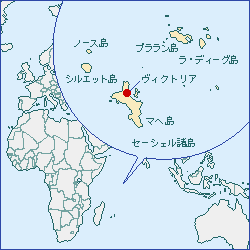
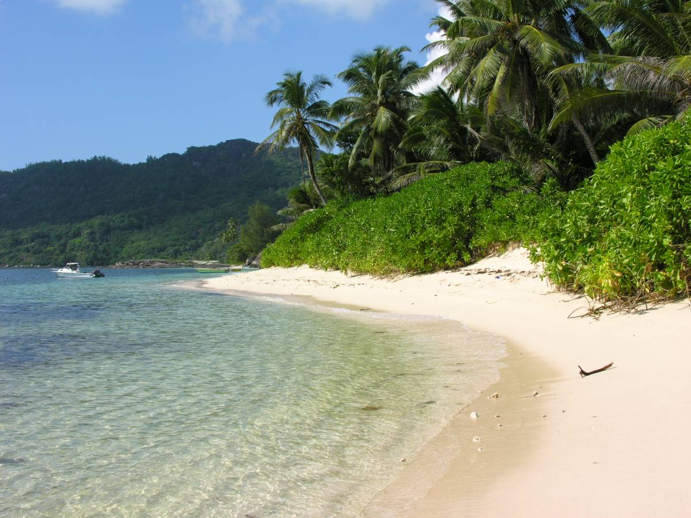
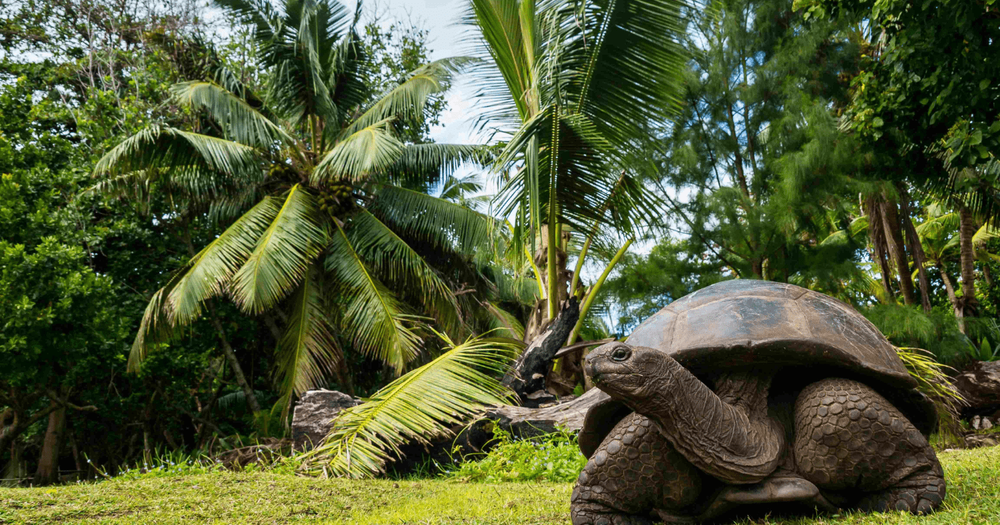
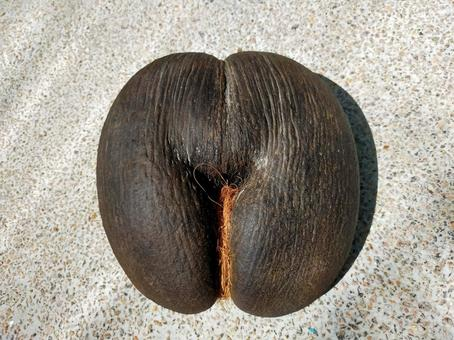

セーシェル共和国、通称セーシェルは、アフリカ大陸から1300 kmほど離れたインド洋に浮かぶ115の島々からなる島国で、イギリス連邦加盟国である。 首都はヴィクトリア。
セイシェルは1年を通じて暑く、平均気温は29℃です。海岸部の平均気温は27℃以下には滅多に下がらず、内陸部、海岸部とも湿度が高いです。
ほぼ赤道直下に位置するため、一年を通して常夏の海で泳ぐことが可能。 美しい海と自然、珍しい動植物の宝庫であり、 地上最後の楽園とも呼ばれている。 国土の約半分は自然保護区域となっており、 ユニークな動物相と植物相をほこっている。
セーシェルの主要産業は漁業及び観光業ですが、外部経済の影響を受けやすい観光業のみに依存するのではなく、その豊富な水産資源をいかに活用するかが持続的経済成長にとって重要な課題となっています。
セーシェルは全方位外交を展開しており、歴史的に関係の深い仏、英国及び南部・東部アフリカに加え、近年はインド、中国、UAE等とも関係を強化。
日本からインド洋に位置するセーシェルへの直行便は運航していないので、エミレーツ航空、エディハド航空、セーシェル航空でのアクセスが一般的です。所要時間はおよそ20時間と考えて良いでしょう。
古い時代に孤島になったため、独自の進化を遂げた固有種が多い。
 観光の持続的な発展を続けるため、政府は自然保護に熱心です。